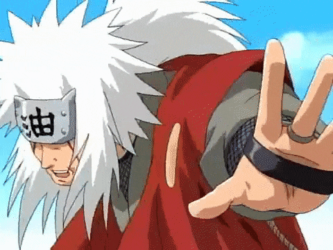
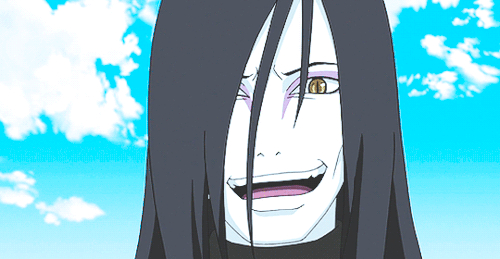
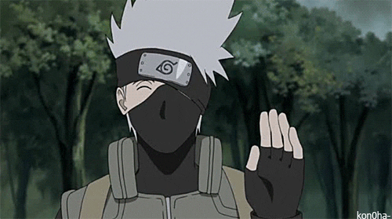
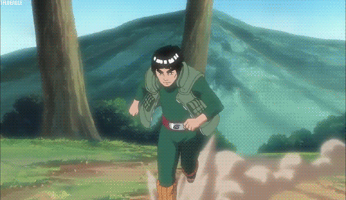
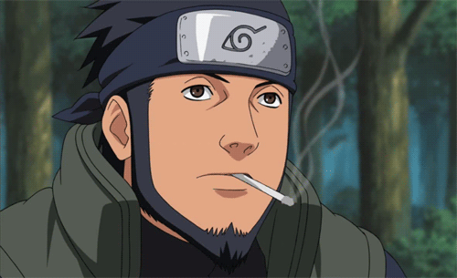
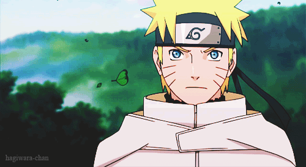
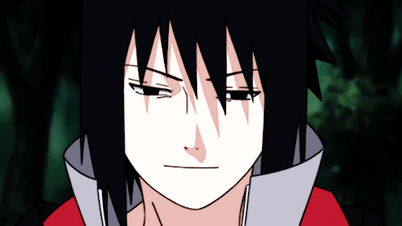

Sannin
 The Sannin (伝説の三忍, Densetsu no
Sannin, Literally meaning: Legendary Three Ninja) are three renowned ninja from Konohagakure, hailed as the
greatest of their time.
The Sannin (伝説の三忍, Densetsu no
Sannin, Literally meaning: Legendary Three Ninja) are three renowned ninja from Konohagakure, hailed as the
greatest of their time.
As genin, the three were the students of Hiruzen Sarutobi, the Third Hokage. During
their time under Hiruzen's tutelage, they all learned to use the Summoning Technique, which they perform with
their left hands. Despite being a team and having accomplished great things together, the three members were
always in constant disagreement with one another, which Tsunade referred to as a "three-way deadlock". Once they
became skilled ninja able to look after themselves, Hiruzen's team was disbanded.
Jiraiya
Jiraiya
(自来也) was one of Konohagakure's Sannin. Famed as a hermit and pervert of stupendous ninja skill, Jiraiya
travelled the world in search of knowledge that would help his friends, the various novels he wrote, and,
posthumously, the world in its entirety – knowledge that would be passed on to his godson and final student,
Naruto Uzumaki.
After he graduated from Konoha's Ninja Academy, Jiraiya was teamed with Orochimaru and
Tsunade under the leadership of Hiruzen Sarutobi. Hiruzen gave them a bell test for the team's first exercise,
during which Jiraiya repeatedly fell for Hiruzen's tricks, and for failing to acquire a bell, he was tied to a
stump as punishment. Hiruzen encouraged Jiraiya to be more like Orochimaru, but Jiraiya countered that his
Transparent Escape Technique was a fair testament to his skills, as he could spy on bathing women without
getting caught: Hiruzen offered to accompany him to see if this was true. Jiraiya had a certain interest in
Tsunade from their first meeting, and when her breasts developed, she became a frequent target of his peepings.
She nearly killed him when she caught him on one occasion, forcing him to be more discreet about his interests.
Orochimaru
Orochimaru (大蛇丸, Orochimaru) is
one of Konohagakure's legendary Sannin. With a life-ambition to learn all of the world's secrets, Orochimaru
seeks immortality so that he might live all of the lives necessary to accomplish his task. After being caught
red-handed performing unethical experiments on his fellow citizens for the sake of this immortality, Orochimaru
defected from Konoha rather than be persecuted for his ambitions, and for many years sought the village's
destruction in order to take revenge and demonstrate what he had learned. After several apparent deaths in the
pursuit of his goals, Orochimaru realises his approach is flawed through Kabuto Yakushi, his former associate,
and begins monitoring the choices and actions of his former apprentice, Sasuke Uchiha.
Tsunade
 Tsunade
(綱手) is a descendant of the Senju and Uzumaki Clan, and is one of Konohagakure's Sannin. She is famed as the
world's strongest kunoichi and its greatest medical-nin. The repeated loss of her loved ones caused Tsunade to
later abandon the life of a shinobi for many years. She is eventually persuaded to return to Konoha and take on
the mantle of Fifth Hokage (五代目火影, Godaime Hokage, Literally meaning: Fifth Fire Shadow), where her skills prove
invaluable to the village.
Tsunade
(綱手) is a descendant of the Senju and Uzumaki Clan, and is one of Konohagakure's Sannin. She is famed as the
world's strongest kunoichi and its greatest medical-nin. The repeated loss of her loved ones caused Tsunade to
later abandon the life of a shinobi for many years. She is eventually persuaded to return to Konoha and take on
the mantle of Fifth Hokage (五代目火影, Godaime Hokage, Literally meaning: Fifth Fire Shadow), where her skills prove
invaluable to the village.
Tsunade is the granddaughter of Hashirama Senju and Mito Uzumaki. Because
Hashirama was the First Hokage of Konohagakure, Tsunade is called "Princess" (姫, Hime). Hashirama doted on
Tsunade when she was very young because she was his first grandchild, and found her deviance and her adoption of
his own gambling habits highly amusing. Tsunade inherited his necklace when he died. After she graduated from
Konoha's Academy, Tsunade was teamed with Orochimaru and Jiraiya under the leadership of Hiruzen Sarutobi. When
Jiraya failed to acquire a bell during the team's first bell test, Tsunade teased him, prompting him to
criticise her flat chest. Despite this remark, Jiraiya had a certain interest in Tsunade from their first
meeting, which only increased after her breasts developed; when she nearly killed him for spying on her while
she bathed, he was forced to be more discrete about his interests.
Jonin
Kakashi
Kakashi Hatake (はたけカカシ, Hatake
Kakashi) is a shinobi of Konohagakure's Hatake clan. Famed as Kakashi of the Sharingan (写輪眼のカカシ, Sharingan no
Kakashi), he is one of Konoha's most talented ninja; regularly looked to for advice and leadership despite his
personal dislike of responsibility. To his students on Team 7, Kakashi teaches the importance of teamwork, a
lesson he received, along with the Sharingan, from his childhood friend, Obito Uchiha. After the Fourth Shinobi
World War, Kakashi becomes Konoha's Sixth Hokage (六代目火影, Rokudaime Hokage, Literally meaning: Sixth Fire
Shadow).
Because his mother died when he was very young, Kakashi was raised during his early years by his
father, Sakumo. Sakumo was famed throughout the shinobi world, having saved Konoha on at least one occasion;
Kakashi in particular revered his father. During one of Sakumo's missions - after Kakashi was enrolled in
Konoha's Ninja Academy - Sakumo made the decision to save the lives of his teammates rather than complete the
assignment. The mission's failure had disastrous consequences for the Land of Fire, causing many in Konoha,
including the teammates he saved, to vilify him for abandoning his duties. Disgraced, Sakumo committed suicide.
Seeing what his father went through and determined not to make the same mistakes, Kakashi decided that following
the Shinobi Rules must always take priority.
Might Guy
Might Guy
(マイト・ガイ, Maito Gai) is a jōnin of Konohagakure. A master of taijutsu, Guy leads and passes his wisdom onto the
members of Team Guy.
Guy is the son of Might Duy, who was known throughout Konoha as the "Eternal Genin".
Duy was not bothered by this moniker and instead was grateful that other people cared enough to know him at all.
Duy encouraged this same kind of optimism in Guy, as well as his belief that one always has youth and that they
could both become taijutsu masters through diligent training. Guy did his best to embody his father's teachings,
but had doubts that Duy's words were devoid of meaning. He nevertheless loved his father and fought others when
they called Duy the "Eternal Genin" mockingly; when one of these fights landed him in the Konoha Hospital, Duy
encouraged Guy not to be upset by this loss and to instead remember that victory is achieved by defending things
that are important.
Asuma Sarutobi
Asuma Sarutobi (猿飛アスマ, Sarutobi Asuma)
was a jōnin of Konohagakure's Sarutobi clan and a former member of the Twelve Guardian Ninja. He was also the
leader of Team 10 which consists of Shikamaru Nara, Ino Yamanaka, and Chōji Akimichi.
Asuma was born to
Biwako and Hiruzen Sarutobi, the Third Hokage. During his Academy entrance ceremony, Asuma became friends with
Kurenai Yūhi. In the anime, during the Chūnin Exams, Asuma was placed on a team with Kurenai and Raidō Namiashi.
He later cheered on his classmates during the third round of the Chūnin Exams.
Genin
Naruto Uzumaki
Naruto
Uzumaki (うずまきナルト, Uzumaki Naruto) is a shinobi of Konohagakure's Uzumaki clan. He became the jinchūriki of the
Nine-Tails on the day of his birth — a fate that caused him to be shunned by most of Konoha throughout his
childhood. After joining Team Kakashi, Naruto worked hard to gain the village's acknowledgement all the while
chasing his dream to become Hokage. In the following years, through many hardships and ordeals, he became a
capable ninja regarded as a hero both by the villagers, and soon after, the rest of the world, becoming known as
the Hero of the Hidden Leaf (木ノ葉隠れの英雄, Konohagakure no Eiyū, Literally meaning: Hero of the Hidden Tree Leaves).
He soon proved to be one of the main factors in winning the Fourth Shinobi World War, leading him to achieve his
dream and become the village's Seventh Hokage (七代目火影, Nanadaime Hokage, Literally meaning: Seventh Fire Shadow).
Sasuke Uchiha
Sasuke Uchiha (うちはサスケ, Uchiha
Sasuke) is one of the last surviving members of Konohagakure's Uchiha clan. After his older brother, Itachi,
slaughtered their clan, Sasuke made it his mission in life to avenge them by killing Itachi. He is added to Team
7 upon becoming a ninja and, through competition with his rival and best friend, Naruto Uzumaki, Sasuke starts
developing his skills. Dissatisfied with his progress, he defects from Konoha so that he can acquire the
strength needed to exact his revenge. His years of seeking vengeance and his actions that followed become
increasingly demanding, irrational and isolates him from others, leading him to be branded as an international
criminal. After learning the truth of his brother's sacrifice, later proving instrumental in ending the Fourth
Shinobi World War, and being happily redeemed by Naruto, Sasuke decides to return to Konoha and dedicate his
life to help protect the village and its inhabitants, becoming referred to as the "Supporting Kage" (支う影,
Sasaukage, Literally meaning: Supporting Shadow).
>Home Page